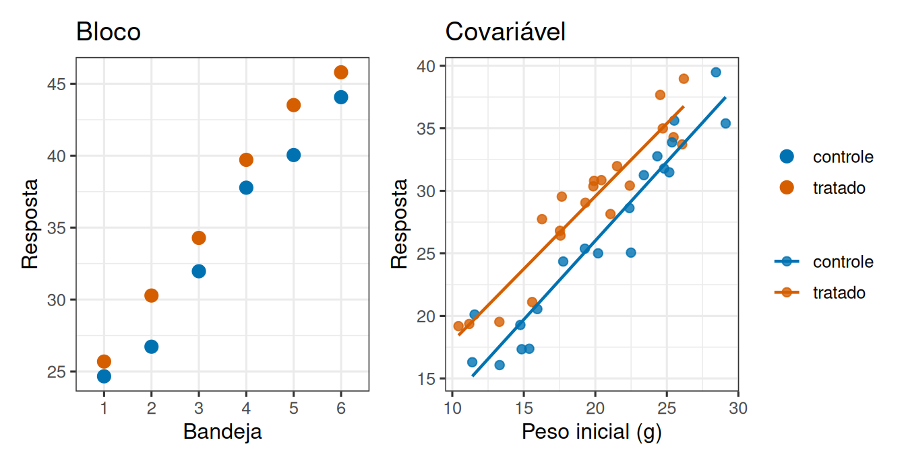
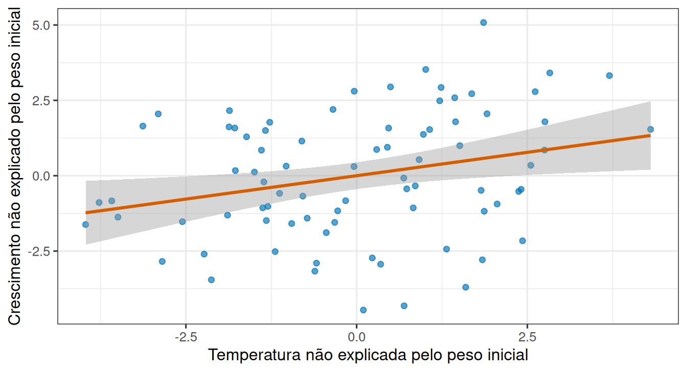
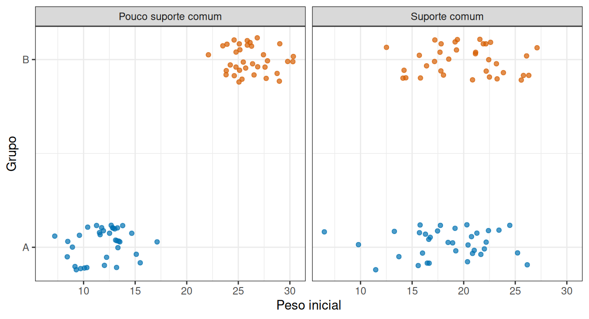

Fator, bloco ou covariável?
Leitura prévia
1 A mesma variável, papéis diferentes
Um experimento de cultivo de juvenis de ostra registra a temperatura da água. O que é a temperatura nesse estudo?
Depende inteiramente do que foi feito com ela.
Se a pesquisadora sorteou quais tanques ficariam a 22 °C e quais a 26 °C, a temperatura é o tratamento, e portanto a resposta do estudo. Se ela apenas agrupou os tanques pela sala em que estavam, sabendo que as salas diferem de temperatura, a temperatura é um incômodo controlado. Se ela mediu a temperatura de cada tanque ao longo do experimento, sem interferir, ela é uma característica registrada de cada unidade.
São três estudos, uma variável e três papéis, o fator, o bloco e a covariável. Saber distinguir os três é o que esta leitura desenvolve, e a distinção não está nos dados nem no modelo. Está no que aconteceu antes da coleta.
2 O critério cabe em três verbos
| O que é | O que você fez com ela | Interpreta o efeito? | |
|---|---|---|---|
| Fator | condição que você quer comparar | sorteou entre as unidades | sim, é o foco do estudo |
| Bloco | agrupamento de unidades parecidas | agrupou antes de sortear | não, é controle |
| Covariável | medida contínua de cada unidade | mediu, sem interferir | como ajuste, não como resultado |
Repare que a coluna do meio é a que decide. Não é o tipo da variável (categórica ou contínua) nem a posição dela na fórmula, e sim o verbo. Vale examinar os três casos separadamente.
2.1 Fator
O fator é aquilo que o estudo existe para comparar. Seus níveis foram atribuídos às unidades por sorteio, e é sobre ele que a conclusão vai falar.
Um experimento pode ter mais de um fator de interesse ao mesmo tempo, e nesse caso a combinação deles também interessa, porque descobrir se o efeito de um depende do nível do outro é frequentemente a parte mais informativa do resultado.
No R, essas duas perguntas podem ser escritas como resposta ~ racao e resposta ~ racao * temperatura. A segunda inclui os dois efeitos principais e sua interação.
2.2 Bloco
O bloco é uma fonte de variação conhecida e indesejada, que você não consegue eliminar mas consegue organizar.
Suponha juvenis criados em seis bandejas de berçário, e que as bandejas difiram entre si por posição, fluxo e iluminação. Em vez de espalhar os tratamentos ao acaso por todas elas e deixar a diferença entre bandejas engordar o resíduo, você garante que cada bandeja receba todos os tratamentos, sorteando as posições dentro dela.
A variação entre bandejas passa a ser atribuída ao bloco e sai do resíduo. O efeito do tratamento fica mais fácil de detectar, sem coletar um dado a mais. O modelo correspondente pode ser escrito como resposta ~ racao + bandeja, mantendo os dois papéis científicos distintos apesar de ambos aparecerem na parte sistemática.
Como o agrupamento organiza a alocação, ele precisa existir antes dela. Blocos definidos no planejamento são controle local, enquanto grupos formados depois de ver os dados são seleção de resultado, e retiram do teste a interpretação que ele teria.
2.3 Covariável
A covariável é uma medida contínua registrada em cada unidade, que afeta a resposta e não é o que você quer comparar.
Se os juvenis entraram no experimento com pesos iniciais diferentes, o peso final vai refletir isso junto com o efeito da ração. Medir o peso inicial de cada indivíduo permite comparar as rações em um mesmo peso de partida, em vez de comparar médias brutas que misturam as duas coisas.
O ajuste é escrito como resposta ~ racao + peso_inicial, em que a ração representa a comparação e o peso inicial define a condição na qual ela é feita.
A lógica é a mesma do bloco, retirar do resíduo uma variação conhecida, mas o instrumento é diferente, porque em vez de agrupar unidades parecidas, mede-se a característica de cada uma. A Figura 1 põe as duas estratégias lado a lado.
Nos dois painéis existe o mesmo efeito de tratamento, de 3 unidades. E nos dois ele estaria escondido se a variação de fundo, entre bandejas ou entre pesos iniciais, tivesse sido ignorada.
3 A fórmula não decide nada
Este é o ponto que costuma confundir. As fórmulas resposta ~ racao + bandeja e resposta ~ racao + peso_inicial têm exatamente a mesma forma algébrica, embora uma use um agrupamento planejado e a outra uma medida contínua.
O R as ajusta pelo mesmo procedimento, e a tabela de saída também se parece. Nada nelas informa qual variável foi sorteada, qual foi agrupada e qual foi medida. Essa informação existe apenas no delineamento, e é você quem a carrega até a interpretação.
4 Três modelos parecidos, três perguntas diferentes
Escrever os modelos lado a lado deixa a semelhança formal ainda mais evidente. Para um fator com níveis \(i\), o modelo mais simples é
\[ Y_{ij}=\mu+\alpha_i+\varepsilon_{ij}. \]
\(\alpha_i\) representa a diferença entre o nível \(i\) e a referência definida pela parametrização. Quando o fator foi aleatorizado, essa diferença pode ser interpretada causalmente para as unidades e condições representadas pelo experimento.
Com bloco, acrescentamos uma diferença para cada grupo de controle local:
\[ Y_{ij}=\mu+\alpha_i+\beta_j+\varepsilon_{ij}. \]
\(\beta_j\) ajuda a explicar a resposta, mas não é uma comparação causal entre bandejas. A inclusão do bloco muda a régua residual e compara tratamentos dentro da estrutura usada na aleatorização.
Com covariável contínua \(X\), o modelo aditivo é
\[ Y_i=\beta_0+\beta_1X_i+\alpha_{g(i)}+\varepsilon_i. \]
\(\beta_1\) descreve a mudança esperada em \(Y\) por unidade de \(X\), mantendo o grupo constante. \(\alpha_{g(i)}\) compara grupos em um mesmo valor de \(X\). Esses são efeitos parciais: cada coeficiente é interpretado depois de considerar os outros termos do modelo.
Ajustados aos dois conjuntos da Figura 1, os modelos com bloco e com covariável produzem tabelas de coeficientes com estrutura diferente, embora o comando seja quase o mesmo.
Ver os dois ajustes em R
modelo_com_bloco <- lm(resposta ~ grupo + factor(bandeja), data = bandejas)
modelo_com_covariavel <- lm(resposta ~ grupo + peso_inicial, data = inicial)
bind_rows(
tibble(modelo = "bloco",
termo = names(coef(modelo_com_bloco)),
estimativa = coef(modelo_com_bloco)),
tibble(modelo = "covariável",
termo = names(coef(modelo_com_covariavel)),
estimativa = coef(modelo_com_covariavel))
)# A tibble: 10 × 3
modelo termo estimativa
<chr> <chr> <dbl>
1 bloco (Intercept) 24.0
2 bloco grupotratado 2.34
3 bloco factor(bandeja)2 3.32
4 bloco factor(bandeja)3 7.95
5 bloco factor(bandeja)4 13.6
6 bloco factor(bandeja)5 16.6
7 bloco factor(bandeja)6 19.8
8 covariável (Intercept) 1.63
9 covariável grupotratado 3.57
10 covariável peso_inicial 1.22No modelo com bloco, cada bandeja recebe seu próprio coeficiente, e são cinco deles para seis bandejas. No modelo com covariável, uma única inclinação descreve o efeito do peso inicial em toda a faixa medida. Em ambos, o coeficiente de grupo é o que responde à pergunta do estudo, e vale cerca de 3 unidades, como esperado pela construção dos dados.
4.1 Como ler um coeficiente parcial
A expressão “mantendo constante” merece um exame mais cuidadoso, porque ela sugere uma operação que não é a que o modelo realiza. Em regressão múltipla,
\[ Y_i=\beta_0+\beta_1X_{1i}+\beta_2X_{2i}+\varepsilon_i, \]
\(\beta_1\) descreve a diferença esperada em \(Y\) para uma unidade adicional de \(X_1\) mantendo \(X_2\) constante. Essa frase não significa que o programa encontrou pares perfeitamente iguais em \(X_2\), e sim que o modelo usa a variação de \(X_1\) que não é explicada linearmente por \(X_2\).
Uma forma de tornar isso visível é retirar de \(X_1\) sua previsão por \(X_2\), retirar de \(Y\) sua previsão por \(X_2\) e relacionar os dois conjuntos de resíduos, como na Figura 2. A inclinação resultante é a mesma \(\hat\beta_1\) do modelo múltiplo.
Ver um coeficiente parcial por resíduos
ostras <- tibble(
peso_inicial = runif(80, 8, 25),
temperatura = 20 + 0.25 * peso_inicial + rnorm(80, 0, 1.8)
) |>
mutate(crescimento = 3 + 0.7 * peso_inicial + 0.45 * temperatura + rnorm(80, 0, 2))
modelo_multiplo <- lm(crescimento ~ temperatura + peso_inicial, data = ostras)
parcial <- tibble(
temperatura_residual = residuals(lm(temperatura ~ peso_inicial, data = ostras)),
crescimento_residual = residuals(lm(crescimento ~ peso_inicial, data = ostras))
)
ggplot(parcial, aes(x = temperatura_residual, y = crescimento_residual)) +
geom_point(alpha = 0.65, colour = "#0072B2") +
geom_smooth(method = "lm", se = TRUE, colour = "#D55E00") +
labs(x = "Temperatura não explicada pelo peso inicial",
y = "Crescimento não explicado pelo peso inicial")
A inclinação da reta da figura é 0,310, e o coeficiente de temperatura no modelo múltiplo é 0,310. As duas coincidem, e essa coincidência é o conteúdo da expressão “controlar por”: comparar a parte de \(X_1\) que ainda varia depois do ajuste, e não apagar magicamente diferenças entre unidades.
5 Quando uma covariável não serve para ajustar
Nem toda variável medida pode entrar no modelo como covariável. Três condições costumam decidir a questão, e nenhuma delas é verificada automaticamente pelo programa.
5.1 A variável precisa existir antes do tratamento
Uma boa covariável de ajuste é medida antes da intervenção, prevê a resposta e não é consequência do tratamento. Peso inicial satisfaz esses critérios, ao passo que ganho de peso medido durante o experimento pode estar no caminho pelo qual a ração atua. Ajustar por uma consequência remove parte do efeito ou cria associação artificial.
Se \(T\) é tratamento, \(M\) uma medida causada por \(T\) e \(Y\) a resposta, o caminho \(T\to M\to Y\) faz parte do efeito total. Condicionar em \(M\) bloqueia esse caminho e responde a uma pergunta sobre efeito direto, que é uma pergunta diferente da original. Se \(M\) também recebe causas não medidas de \(Y\), o condicionamento pode até abrir uma associação artificial. A temporalidade da variável precisa ser conhecida antes de incluí-la por conveniência.
5.2 Os grupos precisam se sobrepor na covariável
A segunda condição diz respeito à faixa de valores observada em cada grupo. Se apenas indivíduos leves recebem a ração A e apenas indivíduos pesados recebem B, o modelo precisa extrapolar para comparar rações no mesmo peso. Uma equação ajustada não cria a informação que falta nessa região.

No painel da esquerda da Figura 3, os dois grupos ocupam faixas semelhantes de peso inicial, e a comparação a um peso fixo se apoia em unidades realmente observadas. No painel da direita, grupo e peso inicial estão quase confundidos, e “manter peso constante” passa a depender principalmente da forma linear assumida. Erros padrão crescem e pequenas mudanças de modelo podem alterar muito o contraste. Restringir a análise à região comum muda a população-alvo, mas costuma ser mais transparente que extrapolar.
5.3 Colinearidade e forma da relação
A terceira condição diz respeito à relação entre as próprias variáveis explicativas. Quando duas covariáveis são fortemente relacionadas, há multicolinearidade. O modelo pode prever bem a resposta, mas separar seus coeficientes parciais se torna instável, porque erros padrão aumentam e os sinais podem mudar com pequenas alterações da amostra. Isso não é corrigido escolhendo a variável com menor valor de p, e sim perguntando quais efeitos parciais têm apoio e significado científico.
Por fim, a relação entre covariável e resposta deve ser aproximadamente linear na escala usada, com variação residual comparável entre grupos. Se a inclinação difere entre tratamentos, aparece uma interação e o efeito do fator passa a depender do valor da covariável, situação em que um único número deixa de descrever a comparação.
A temperatura do início desta leitura continua sendo a mesma medida, registrada com o mesmo instrumento, guardada na mesma coluna. O que decide seu papel é uma informação que não está na planilha, que é se ela foi sorteada, agrupada ou apenas observada. Vale insistir que essa informação não é recuperável depois. Um fator costuma ser categórico, mas uma dose controlada também pode ser representada continuamente. Um bloco costuma ser categórico, mas pode nascer de faixas de uma medida contínua. Uma covariável costuma ser contínua, mas outras variáveis prévias também podem funcionar como ajustes. O papel vem da pergunta, da temporalidade e da forma de alocação, e é ele que determina se um coeficiente pode ser lido como resultado, como controle ou como condição de comparação.